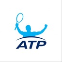

atpworldtourRelive 2016's biggest upsets on the ATP World Tour, including Vesely's stunner of Djokovic in Monte-Carlo. Read: bit.ly/2gEjI3Z atpworldtourHappy Birthday to all our ATP World Tour players celebrating this week! bit.ly/1s7yPG4 atpworldtourThe Biggest Reason Monfils Had His Best Year On Tour. Read: bit.ly/2hEGciY atpworldtourRemember this? Roger Federer's Wimbledon comeback against Marin Cilic is our second best Grand Slam match of the year. Click through to learn what's our No. 1: bit.ly/2hoC5Yc #ATP atpworldtourWatch part two of the special NextGen Uncovered documentary, which sees Karen Khachanov win his first ATP World Tour title in Chengdu, while in Beijing both Kyle Edmund and Sascha Zverev make strong runs. atpworldtourNext in our Season In Review, we count down the best 5 Grand Slam matches of 2016. Today: Nos. 5-3, featuring Kei Nishikori, Novak Djokovic and Fernando Verdasco.
More: bit.ly/2h2YevH
Does it match your list? #ATP atpworldtourGrigor #Dimitrov enjoys a brief break from off-season training and attends the Fashion Awards with Anna Wintour. More: bit.ly/2ghOEa7 atpworldtour💒 Viktor #Troicki weds Aleksandra Djordjevic, with Novak #Djokovic, Janko #Tipsarevic, Nenad #Zimonjic among those in attendance. More: bit.ly/2g7IINE atpworldtourAndy #Murray was involved in the two #ATP matches we judged to be the best of 2016. Which ones were they?
More: bit.ly/2gYKDpt
Coming Wednesday: The best Grand Slam matches of 2016. atpworldtourWe continue our Season In Review series this week with the Best ATP Matches of 2016! Today: Nos. 5-3, featuring Rafael Nadal, Novak Djokovic and Pablo Cuevas.
More: bit.ly/2gUaT49 #ATP atpworldtourFabrice #Santoro defeats Xavier #Malisse 6-4, 2-6, [10-6] to become the last man standing at #ChampionsTennis. atpworldtourTim #Henman believes Andy #Murray has "multiple" Grand Slam titles left in him. Do you agree? Read: bit.ly/2gTsAnp atpworldtourInfosys ATP Beyond The Numbers explains how an improved return game was the key to Milos Raonic's career year. Read: bit.ly/2gNE34N atpworldtourFabrice #Santoro moves into the #ChampionsTennis final with a win over Greg #Rusedski and will play Xavier #Malisse for the title. atpworldtourMansour #Bahrami is celebrating his 20th year of playing #ChampionsTennis. Read: bit.ly/2gRlPA2 atpworldtourFabrice #Santoro prevailed over Younes El Aynaoui in his opening match at #ChampionsTennis. Read: bit.ly/2gwvON0 atpworldtour#ChampionsTennis players took part in the Mannequin Challenge. atpworldtourThree matches that went the distance, including two five-setters and one of the best contests of the year at the #ATPFinals.
Our Best Rivalries series continues with Andy Murray vs. Kei Nishikori: bit.ly/2gPVvGi #ATP atpworldtourTim #Henman had a busy Thursday playing in both day and evening sessions, but finished the night with a hard-fought win over Patrick #Rafter. Read: bit.ly/2fXGweC atpworldtourPatrick #Rafter discusses the future of Australian tennis and how Lleyton #Hewitt will serve as a positive influence. Read:
bit.ly/2gdL9iA